Впервые было опубликовано в «Linux Format» №11 (85), ноябрь 2006 г.
Как мы уже говорили в прошлый раз, количество различных функций в Maxima разработчики постарались свести к минимуму, а широту размаха каждой конкретной функции, соответственно, к максимуму. Соблюдается эта тенденция и в функциях построения графиков: основных таких функций всего две, с очевидными, как всегда, названиями — plot2d и plot3d (одно из значений слова plot — график, а аббревиатуры 2d и 3d переводятся как двумерный и трехмерный). Если говорить точнее, возможности графической отрисовки не встроены в Maxima, а реализованы посредством внешних программ, в чем и прослеживается пресловутый Unix-way: «одна задача — одна программа». По умолчанию, построением графиков занимается gnuplot, но кроме него есть разрабатываемый вместе с Maxima и идущий в ее же пакете openmath. Gnuplot необходимо установить (вручную либо автоматически — как зависимость Maxima) из пакета gnuplot-nox, либо просто gnuplot, а для работы openmath нужен командный интерпретатор wish, входящий обычно в пакет tk; и, начиная с версии 5.10.0, еще и xMaxima.
Теперь кратко — о возможностях. Начнем с plot2d. Кратчайший вариант ее вызова такой: plot2d(выражение, [символ, начало, конец]), где выражение задает функцию, график которой нужно построить, символ — неизвестное (он, понятное дело, должен быть единственным неопределенным символом, входящим в выражение), а начало и конец задают отрезок оси Х для построения графика; участок по оси Y в таком варианте записи выбирается автоматически, исходя из минимума и максимума функции на заданном промежутке. Обратите внимание, что неизвестное и концы промежутка нужно задавать не тремя отдельными параметрами, как, скажем, в integrate, а в виде списка. Это связано с тем, что plot2d может принимать еще и дополнительные аргументы — в таком случае они перечисляются следом за таким списком, что исключает всякую путаницу.
После вызова функции plot2d в таком варианте откроется окно gnuplot, в котором будет отображен затребованный график. Никакой интерактивной работы с полученным изображением gnuplot не предусматривает, кроме автоматического его масштабирования при изменении размеров окна. Насмотревшись вдоволь, можно закрыть окно с графиком клавишей Q, либо, в случае работы с Maxima в редакторе TeXmacs или wxMaxima, просто переключиться обратно в интерфейс, оставив окно gnuplot открытым, и продолжить работу:

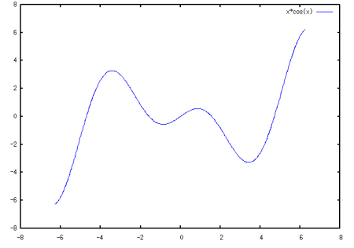
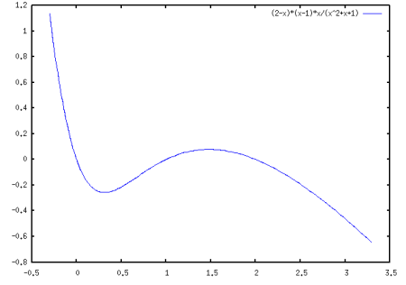
В некоторых случаях автоматический подбор отображаемого участка вертикальной оси может нас не устроить. Например, он работает не очень хорошо, если функция имеет на заданном промежутке точку разрыва, хотя бы один из односторонних пределов в которой равен бесконечности: тогда промежуток по оси Y будет выбран слишком большим. Да и в других случаях может понадобиться изменить умолчательное поведение. Для этого предусмотрен такой вариант вызова функции: plot2d(выражение, [символ, начало, конец], [y, начало, конец]). Здесь буква y используется в качестве обозначения вертикальной оси, а остальные два параметра имеют тот же смысл, что и выше.
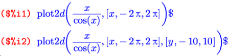
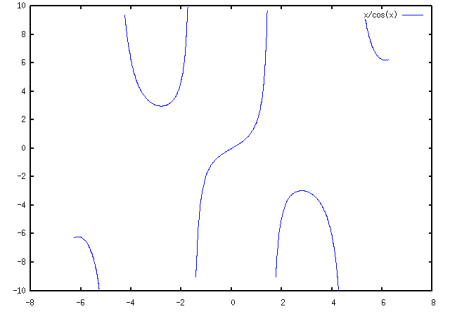
Как видите, умолчательный вид графиков в gnuplot достаточно прост и даже аскетичен, но здесь можно очень и очень многое менять с помощью дополнительных опций. Некоторые из которых будут освещены чуть ниже, а остальные можно изучить по документации к gnuplot.
Чтобы построить на одной и той же картинке одновременно два графика (или больше), просто передайте функции plot2d вместо отдельного выражения их список:
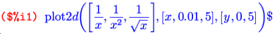
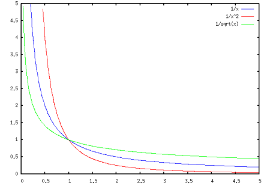
Здесь [x, 0.01, 5] вместо [x, 0, 5] я написал «по привычке» — Maxima 5.9.x выдавала ошибку, если заданная функция была не определена на одном из концов интервала. В 5.10.0 мне эту ошибку воспроизвести не удалось; так что есть основания полагать, что поведение в таких случаях поправили.
Может plot2d строить и графики параметрически заданных функций. Для этого используется список с ключевым словом parametric: plot2d([parametric, x-выражение, y-выражение, [переменная, начало, конец], [nticks, количество]]). Здесь x-выражение и y-выражение задают зависимость координат от параметра, то есть, по сути, это две функции вида x(t), y(t), где t — переменная параметризации. Эта же переменная должна фигурировать в следующем аргументе-списке, а параметры начало, конец, как и в двух других рассмотренных случаях, задают отрезок, в пределах которого этот параметр будет изменяться. Последний аргумент-список, с ключевым словом nticks, задает количество кусочков, на которые будет разбит интервал изменения параметра при построении графика. Этот аргумент опционален, но на практике он нужен почти всегда: умолчательное значение nticks равно 10; согласитесь, редко бывает нужно в качестве графика получить ломаную из 10 отрезков. Вот пример построения графика параметрической функции:
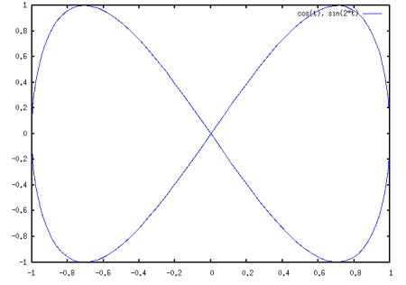
Кроме parametric, функция plot2d понимает еще одно ключевое слово: discrete. Предназначено оно, как нетрудно догадаться, для отображения на плоскости дискретных множеств; точнее говоря, конечных наборов точек. По записи аргументов такой вариант распадается еще на два: plot2d([discrete, x-список, y-список]) и plot2d([discrete, [x, y]-список]). В первом варианте координаты задаются как два отдельных списка [x1, x2, …, xn], [y1, y2, ,…, yn], а во втором — как список пар координат отдельных точек [[x1, y1], [x2, y2], …, [xn, yn]].
Если мы, к примеру, имеем набор статистических значений, зависящих от номера, мы можем отобразить его, задав в качестве x-координат сами эти номера, то есть натуральные числа:
По умолчанию множество отображается в виде ломаной с вершинами в заданных точках; такое поведение можно изменить и получить вывод, к примеру, в виде отдельных точек. Это достигается использованием специальных опций, применимых как к plot2d, так и к plot3d, поэтому давайте перейдем к рассмотрению последней.
Функция plot3d имеет два варианта вызова: один для явного задания функции и один для параметрического. В обоих случаях функция принимает три аргумента. Для явно заданной функции: plot3d(выражение, [переменная1, начало, конец], [переменная2, начало, конец]); аргументы аналогичны plot2d, с той разницей, что здесь независимых переменных две.
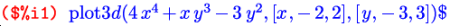
Построение нескольких поверхностей на одном графике не поддерживается — потому, вероятно, что на таком рисунке проблематично было бы что-либо разглядеть. Посему для параметрически заданной функции ключевое слово parametric не требуется: вызов с первым аргументом-списком уже не с чем перепутать. График параметрически заданной функции строится так: plot3d([выражение1, выражение2, выражение3], [переменная1, начало, конец], [переменная2, начало, конец]), где выражения отвечают, по порядку, x(u, v), y(u, v), z(u, v).
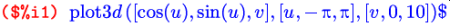
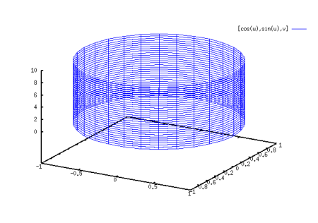
С помощью параметрической формы можно строить и пространственные кривые. Для этого просто нужно задать второй, фиктивный, параметр, чтобы Maxima не ругалась на неправильный синтаксис вызова функции:
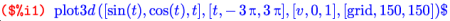
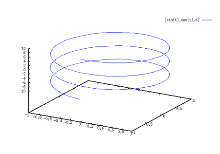
И отсюда мы плавно переходим к опциям функций построения графиков, посредством использованной выше опции grid. Каждая опция имеет некоторое умолчательное значение, а изменить его можно, добавив к аргументам список вида [имя-опции, значение]. Строго говоря, рассмотренные выше y и nticks также являются опциями; в предпоследнем примере мы задали опции nticks значение 120, а в примере перед ним в качестве значения опции y использовалась пара чисел 0, 5. В документации к Maxima символ x, выступавший в примерах выше в качестве обязательного параметра, также приводится как опция; на самом деле опцией он является только в случае parametric и действует тогда так же, как и опция y, только по другой оси. Опция grid, использованная выше, применима к трехмерным графикам вместо опции nticks, используемой для двумерных. Она, также как и y, задается в виде двух целых значений, которые для поверхностей задают размер ячеек сетки, в виде которой отображается поверхность; первое число — вдоль оси X, второе — вдоль оси Y; либо, в случае параметрического задания, по первому и по второму параметру соответственно. Для кривых из этих параметров действует только один, но писать нужно опять же оба, дабы не нарушать синтаксис; и здесь этот параметр имеет в точности тот же смысл, что nticks для кривых на плоскости. Но перейдем к другим опциям.
Первая опция, которую мы рассмотрим, задает формат вывода результата; так она и называется: plot_format. Формат может принимать одно из четырех значений, первое из которых действует по умолчанию: gnuplot, mgnuplot, openmath и ps. В умолчательном варианте (значение gnuplot) данные для отображения передаются напрямую программе gnuplot, которая сама по себе имеет достаточно гибкое управление, и параметры ей можно передавать прямо из Maxima с помощью дополнительных опций функций plot2d/3d. Параметров этих настолько много, что gnuplot могла бы стать темой отдельной статьи; так что обращайтесь за ними к документации по gnuplot. В противовес своим богатым возможностям, gnuplot имеет перед следующими двумя интерфейсами (если откровенно — скорее, лишь перед одним из них) только один недостаток: она генерирует статичное изображение, тогда как mgnuplot и openmath позволяют в реальном времени масштабировать и передвигать картинку, а plot3d — еще и вращать линию или поверхность в разные стороны в пространстве.
Следующий вариант — mgnuplot — является дополнительным интерфейсом к gnuplot, написанным на Tcl/Tk, но динамика у него настолько «задумчивая», а остальные возможности настолько бедны, что я не вижу смысла останавливаться на нем подробнее.
И перехожу сразу к openmath. Он тоже не очень-то поддается управлению, зато предоставляет хорошую интерактивность, особенно ценную в трехмерном варианте: после того, как объект сгенерирован, его можно масштабировать и очень динамично вращать, разглядывая со всех сторон. Особенно это помогает для сложных поверхностей, когда, глядя на статичную «сетку» gnuplot, непросто понять форму поверхности. Справедливости ради нужно отметить, что gnuplot позволяет задавать точку обзора трехмерного объекта в качестве одного из многочисленных параметров, то есть хотя картинка и статична, но с какой стороны на нее смотреть, мы можем указать произвольно.
Ну и последнее значение опции plot_format подталкивает Maxima к непосредственной генерации PostScript-документа с изображением. Но и здесь надо сказать: генерировать PostScript-вывод умеет и все тот же gnuplot.
Большинство остальных опций относятся только к формату вывода gnuplot. А мы рассмотрим еще одну универсальную, пригодную для всех форматов и преобразующую не результирующее изображение, а сам процесс построения графика; точнее, систему координат. Называется эта опция transform_xy, по умолчанию она равна false. Передавать ей нужно выражение, сгенерированное функцией make_transform([x, y, z], f1(x, y, z), f2(x, y, z), f3(x, y, z)). Кроме того, существует одно встроенное преобразование, известное как polar_xy и соответствующее make_transform([r, th, z], r*cos(th), r*sin(th), z), то есть переходу к полярной цилиндрической системе координат. В качестве примера использования transform_xy приведу преобразование к полярным сферическим координатам, раз уж во встроенном виде его нет:

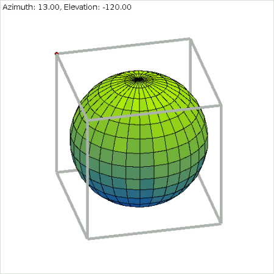
Обратите внимание: в первом аргументе-списке к make_transform последним должен идти зависимый символ, то есть тот, который будет выступать функцией от двух других.
Если вам нужно постоянно работать со сферическими координатами, можете задать, скажем, spherical_xy:make_transform([t, f, r], r*sin(f)*sin(t), r*cos(f)*sin(t), r*cos(t)), и затем при построении графиков писать [transform_xy, spherical_xy]. Ветвитесь и повторяйтесь До сих пор мы двигались только по прямой, а теперь поговорим о средствах «изменения траектории»: условном операторе и циклах.
Начнем с условия. В Maxima, в отличие от большинства «традиционных» процедурных и объектных языков программирования, где существует так называемый условный оператор, привычная связка if-then-else является не синтаксической конструкцией, а самым настоящим оператором. По своему действию он больше всего похож на тернарный оператор языка C, только с более «человеческим» синтаксисом: if условие then выражение1 else выражение2. При выполнении «условия» из двух «выражений» вычисляется только первое и возвращается как результат оператора; в противном случае выполняется только второе и оно же является значением всего выражения if-then-else. Часть конструкции else выражение2, как и в большинстве языков программирования, опциональна. Если ее нет, а условие все-таки не выполнилось, результат оператора if будет равен false.
При этом, конечно же, никто вам не мешает использовать этот оператор как обычную условную конструкцию, а возвращаемое значение просто игнорировать. С другой стороны, оператор if можно применять, например, для задания рекурсивных последовательностей:
Немного о самих условиях, которые могут проверяться оператором if. Условия >, <, >=, <= записываются и расшифровываются традиционно, так же как и логические операторы and, or, not. А вот о равенствах-неравенствах нужно сказать пару слов. Равенство в Maxima есть двух видов: синтаксическое и логическое. Знаком = обозначается как раз первое, а второе вычисляется с помощью функции equal(). Чтобы не быть многословными, отличие синтаксического равенства от логического продемонстрируем на примере; здесь дополнительно используется предикат по имени is, которые проверяет на истинность свой аргумент.

Ну и неравенств, соответственно, тоже существует два, с тем же смыслом. Синтаксическое неравенство обозначается достаточно непривычно — через #; видимо, этот символ разработчики сочли наиболее визуально схожим со знаком ≠. Ну а логическое неравенство обозначено через notequal().
Конечно, кроме упомянутых сравнений в условном операторе можно использовать любые предикаты, то есть функции, возвращающие логические значения true/false. Функций таких достаточно много, но все они достаточно просты, поэтому не буду тратить время на их описание: его можно почерпнуть в том же объеме из документации.
Напоследок перейдем к циклам. Цикл в Maxima будто бы тоже один. Но он имеет столько различных вариантов, что назвать это все одним оператором цикла язык не поворачивается. Вот как выглядят основные разновидности:
Первый прокручивает цикл, изменяя переменную с заданным шагом от начала до конца; второй — от начала и пока выполняется условие; третий — наоборот, пока условие не выполняется. К примеру, мы можем получить список из первых десяти членов последовательности из позапрошлого примера:
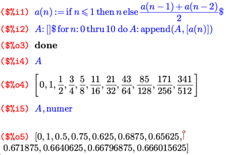
Как видите, в качестве оператора цикл в простейшем его виде, в отличие от условия, использовать смысла нет, так как его возвращаемое значение всегда равно done. В этом примере один из элементов циклического оператора не указан; шаг, как видите, может быть опущен и по умолчанию равен единице. Самое интересное в этом операторе то, что опустить позволяется любую его часть, кроме do; и в том числе в любых комбинациях. К примеру, опустив кроме step еще и for, мы получаем из этого же оператора традиционные циклы while и unless (второй и третий варианты). А проделав то же самое с первым вариантом записи, получим цикл без счетчика вида thru число do выражение, который просто повторится заданное число раз. Можно, наоборот, опустить условие окончания и получить цикл с индексной переменной, но бесконечный. А оставив только do, получим самый простой вариант бесконечного цикла. Из таких бесконечных циклов можно выйти с помощью оператора return(выражение) (точнее, конечно, конструкции из двух операторов вида if условие then return(выражение)), который прервет выполнение цикла и вместо done вернет заданное выражение. Естественно, оператор return() можно применять во всех видах циклов, а не только в бесконечных.
Но и это еще не все. Кроме всех уже рассмотренных вариаций, цикл может принимать еще две ипостаси. Во-первых, вместо step может использоваться конструкция next выражение, смысл которой лучше тоже продемонстрировать на примере
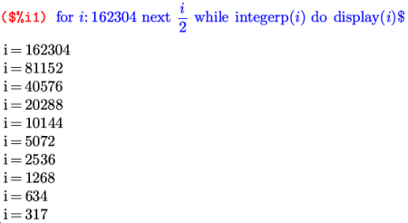
После next может стоять любое вычислимое выражение относительно индекса цикла, и применяться эта конструкция может во всех трех вариантах цикла (thru/while/unless).
А «во-вторых» — это еще один отдельный вариант цикла: for переменная in список do выражение; либо расширенная форма: for переменная in список условие do выражение. Здесь цикл будет прокручен с переменной, изменяющейся по всем элементам списка; плюс можно задать еще и дополнительное условие на прерывание цикла. Вот теперь мы с циклами действительно закончили. Как видите, все достаточно разнообразно. Я, признаться, ничего, что здесь не реализовано, и придумать не смог.
Но рассказ о циклах и условном операторе остается неполным, пока я не рассказал о группировке выражений — ведь в обычном варианте после then или do можно написать всего одно из них. А группировка, или, как ее принято называть, составной оператор, в Maxima — это опять-таки самый настоящий оператор, который тоже, как и положено оператору, возвращает некоторое значение. Обозначается он скобками, самыми что ни на есть круглыми и обыкновенными; а разделяются сгруппированные операторы/выражения внутри этих скобок не менее обыкновенными запятыми. Возвращаемым значением составного оператора является последнее вычисленное выражение.
С условным оператором, столь разнообразными циклами и составным оператором мы уже можем, комбинируя их между собой и с любыми другими функциями и выражениями Maxima, писать полноценные программы с использованием богатого символьного математического аппарата. Естественно, теперь нам захочется сохранять эти программы в виде внешних файлов, чтобы не набирать их каждый раз вручную, а подгружать одной короткой командой. Об этом, а также о математических аналогах объявления переменных — в завершающей статье цикла.
Мы также поговорим о математических аналогах объявления переменных и рассмотрим практические примеры с применением уже достаточно богатого известного нам инструментария.